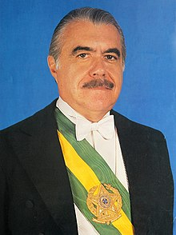
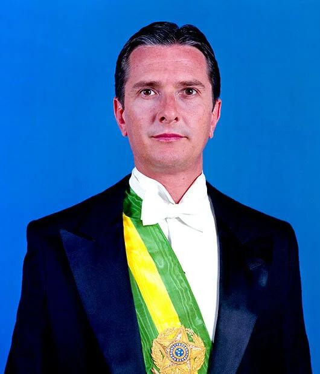

Foi um tempo difícil no Brasil. Afetado por uma
grande crise econômica, especialmente a inflação muito alta, o governo enfrentou dificuldades para fazer a
economia ficar estável. No entanto, nesse período, também foram feitas medidas importantes, como:

José Sarney
José Sarney, cujo nome completo é José Sarney de Araújo Costa, é um político e
escritor
brasileiro nascido em 24 de abril de 1930, em Pinheiro, Maranhão. Ele teve uma longa
carreira política que se estendeu por várias décadas.
Após seu mandato como presidente, Sarney continuou ativo na política brasileira e
ocupou cargos no Senado Federal.
Mandato de
Cinco Anos: Em 1985, José Sarney assumiu o cargo de presidente do Brasil, completando
o mandato de
Tancredo Neves, que faleceu antes de assumir o cargo. Seu mandato de cinco anos marcou a
transição da era
militar para a democracia.
Crise
Econômica: A hiperinflação, os desequilíbrios fiscais e as altas taxas de desemprego
marcaram o
governo de Sarney. A estabilidade e o desenvolvimento do país foram prejudicados por esses
problemas
econômicos.
Estruturação
do Mercosul: O Mercosul (Mercado Comum do Sul), uma união aduaneira originalmente
composta por
Brasil, Argentina, Uruguai e Paraguai, passou por avanços durante seu mandato. O objetivo desta
iniciativa
era aumentar a integração econômica e o comércio na região.
Hiperinflação: Uma das marcas do governo Sarney foi a hiperinflação.
Os índices
inflacionários aumentaram dependendo da estabilidade econômica e do poder de compra da
população.
Plano
Cruzado em 1986 - Extinção do Cruzeiro: Em resposta à hiperinflação, o governo lançou o Plano
Cruzado em 1986, que incluiu uma eliminação da moeda Cruzeiro e uma introdução do Cruzado. O objetivo era
estabilizar a economia e controlar a inflação.
Plano
Bresser em 1987: Em 1987, Sarney criou o Plano Bresser como uma solução para as constantes
dificuldades econômicas. Para controlar a inflação e equilibrar as contas públicas, o plano incluía
congelamento de preços, negociação e câmbio.
Plano Verão
- 1989 e Adoção do Cruzado Novo: O Plano Verão, que começou em 1989, substituiu o Cruzado pelo
Cruzado Novo. Ao tentar conter a inflação, novas medidas foram tomadas, mas os problemas econômicos
persistiram e não tiveram muitos resultados.
Convocação
da Assembleia Nacional Constituinte: A Assembleia Nacional Constituinte foi convocada em 1987
durante o governo Sarney. Foi responsável por escrever a nova Constituição Federal de 1988. Os fundamentos
da democracia e os direitos fundamentais da sociedade brasileira foram estabelecidos por meio desse
processo.
Constituição de 1988
(atual): A Constituição de 1988, que marcou o início da redemocratização do Brasil, foi aprovada
como um documento que definia os princípios essenciais da sociedade democrática.
Alguns dos eventos mais notáveis
incluíram o estabelecimento do direito à igualdade perante a lei, a redução da idade mínima para votar para
16 anos (agora é obrigatório ter 18 anos), a reorganização e harmonização dos três poderes, o fim da censura
e a garantia da inviolabilidade da correspondência.
Além disso, a Constituição
estabelece os direitos do consumidor por meio do Código de Defesa do Consumidor e garante o direito a
reuniões pacíficas. Além disso, a Carta Magna de 1988 enfatiza a proteção dos direitos humanos classificando
o racismo e a tortura como crimes inafiançáveis.
Outro aspecto importante desta
constituição é a garantia do direito de habeas corpus, que protege a liberdade individual contra prisões
arbitrárias. Isso consolida os fundamentos do Estado democrático de direito no Brasil.
Direitos
Sociais: Uma conquista significativa para os trabalhadores brasileiros são os direitos sociais
garantidos na Constituição de 1988, que promovem condições de trabalho justas e dignas.
A Carta Magna reconhece os direitos
dos trabalhadores, incluindo o 13 salário, o descanso semanal remunerado, a contribuição para o Fundo de
Garantia por Tempo de Serviço (FGTS), a garantia de um salário mínimo justo, an irredutibilidade do salário,
uma licença paternidade de 5 dias em ocasiões especiais e, de maneira notável, o direito de greve sem
restrições.
Art. 225: De
acordo com o artigo 225, todos têm direito a um ambiente ecologicamente equilibrado, considerado um recurso
compartilhado pela sociedade e essencial para uma vida saudável. A garantia da preservação e conservação
desse ambiente para as gerações presentes e futuras é uma responsabilidade do governo e da comunidade.
Em relação ao governo Sarney, houve
eleições diretas em que 22 candidatos competiram. Os candidatos Fernando Collor de Mello (PRN e coligações
de
orientação à direita) e Luiz Inácio Lula da Silva (PT e coligações de orientação à esquerda) competiram no
segundo turno. Collor emergiu como o presidente eleito em um contexto eleitoral instável, marcado por
acusações mútuas, disputas acirradas e fortes rivalidades.
Fernando Collor De Mello (1990-1992):

Fernando Collor
Fernando Collor de Mello, cujo nome completo é Fernando Affonso Collor de Mello, é
um político brasileiro nascido em 12 de agosto de 1949 em Rio de Janeiro, RJ. Ele
foi o primeiro presidente do Brasil eleito por voto direto após a redemocratização
do país.
Após o impeachment, Collor ficou afastado da vida política por alguns anos, mas
retornou como senador por Alagoas, sendo eleito em 2006 e reeleito em 2014.
Collor defendeu o
combate à
inflação e à corrupção durante a campanha eleitoral, principalmente contra os "marajás",
funcionários
públicos com altos salários.
Ficou conhecido como o
"caçador de
marajás" devido an isso. Foi um crítico extremamente severo das classes baixas, bem como das
frases de
efeito como "Não fale em crise. Trabalhe".
Fernando Collor, do PRN
(Partido da
Reconstrução Nacional), ganhou 35 milhões de votos em uma disputa acirrada. Ele venceu assim
Luiz Inácio
Lula da Silva, do Partido dos Trabalhadores (PT), com 31 milhões de votos. Ele assumiu o cargo
em 15 de
março de 1990.
Collor implementou o
"Plano de
Reconstrução Nacional", que foi subdividido em planos Collor I e II, logo após assumir o cargo.
O objetivo
era conter a inflação do país e fortalecer a nova moeda, o cruzeiro novo, confiscando as
poupanças.
A população ficou extremamente
descontente com esta medida. Tanto as pessoas físicas quanto as jurídicas ficaram com apenas uma pequena
quantia de dinheiro em suas contas bancárias em um instante. O governo só permitia o saque de cinquenta mil
cruzeiros, que equivalem a aproximadamente seis mil dólares.
O Plano Collor provocou a maior
recessão econômica da história do Brasil. A inflação disparou, o desemprego aumentou e várias empresas
faliram.
Além do confisco da poupança, o
Plano Collor se concentrou principalmente na abertura do mercado brasileiro, na privatização de empresas
públicas e na redução do funcionalismo, baseado no neoliberalismo.
Itamar Franco (1992-1994):
Itamar Franco
Itamar Augusto Cautiero Franco, conhecido como Itamar Franco, foi um político brasileiro que nasceu em 28 de junho de 1930, em São João Nepomuceno, Minas Gerais, e faleceu em 2 de julho de 2011.
Em 1992, Itamar Franco assumiu a presidência do Brasil de forma inesperada, após a renúncia do então presidente Fernando Collor.
Collor é eleito presidente e Itamar
Franco é vice. A equipe assumiu o governo durante uma recessão econômica, altos índices de desemprego e alta
inflação. Quando Itamar retornou ao PMDB e passou a criticar Collor publicamente, a inflação chegou a 1100%
em 1992.
Assim, em outubro de 1992, Itamar
Augusto Cautiero Franco assume a presidência da República com um amplo apoio partidário para implementar
reformas significativas. Assim, em Abril de 1993, realiza um plebiscito sobre o sistema de governo do
Brasil; a República ganhou 66% dos votos e o Presidencialismo 55%.
A nomeação de Fernando Henrique
Cardoso para o Ministério da Fazenda marcou o início da reforma econômica. Ele liderou o grupo de
especialistas que criou o Plano de Estabilização Econômica, que começou a valer em 1o de março de 1994,
quando foi lançada a unidade real de valor (URV) com o objetivo de conter a inflação e preparar o terreno
para a introdução do real (R$). O plano foi tão bem-sucedido que Fernando Henrique foi eleito presidente em
outubro daquele ano.
Foi embaixador brasileiro em
Portugal de 1995 a 1996.Em 1998, dois anos após, foi eleito Governador de Minas Gerais pelo PMDB. Em 2002,
assumiu novamente o cargo de embaixador brasileiro, desta vez na Itália.
Itamar assumiu o cargo de
presidente do Conselho de Administração do Banco de Desenvolvimento de Minas Gerais em 2007. Em 2009, ele
muda de partido e se elege novamente senador pelo estado de Minas Gerais em 2010.
Foi diagnosticado com leucemia e
faleceu no dia 2 de julho de 2011 devido a um acidente vascular cerebral. Seu corpo foi cremado e as cinzas
foram colocadas no jazigo de sua família em Juiz de Fora.
O plano real
de Itamar Augusto Cautiero Franco foi implementado em etapas ao longo de 1993 e 1994. As mudanças
propostas pela equipe de FHC contrariaram medidas adotadas por outros governos e o plano criou desconfiança,
especialmente no meio político. Na prática, a oposição vem de partidos políticos como o Partido dos
Trabalhadores (PT), que acreditam que as medidas apresentadas no plano prejudicam os trabalhadores.
Foram levantadas críticas sobre os
aumentos de impostos propostos pelo plano, o uso de moeda virtual para desviar as pessoas da navegação
física para a navegação real e muito mais. O plano foi implementado em três fases, conforme previsto pelo
próprio FHC.
A Primeira Fase é o momento em que
as contas nacionais se estabilizam; a Segunda Fase foi o lançamento das unidades de valor real (URV) e a
Terceira Fase foi o período de lançamento efetivo real. Entretanto, logo que o plano foi colocado em ação,
os resultados foram rápidos. No final de 1994, a inflação mensal já era de 1% e em junho, quase 50%.
Fernando Henrique Cardoso(1995-2002):
FHC
Fernando Henrique Cardoso, conhecido como FHC, é um sociólogo, cientista político e
político brasileiro. Ele nasceu em 18 de junho de 1931, no Rio de Janeiro, RJ.
Em 1993, FHC assumiu a presidência do Brasil, eleito pelo PSDB. Durante seus dois mandatos presidenciais, que foram de
1995 a 2002, ele implementou uma série de medidas econômicas e sociais.
Collor defendeu o
combate à
inflação e à corrupção durante a campanha eleitoral, principalmente contra os "marajás",
funcionários
públicos com altos salários.
Ficou conhecido como o
"caçador de
marajás" devido an isso. Foi um crítico extremamente severo das classes baixas, bem como das
frases de
efeito como "Não fale em crise. Trabalhe".
Fernando Collor, do PRN
(Partido da
Reconstrução Nacional), ganhou 35 milhões de votos em uma disputa acirrada. Ele venceu assim
Luiz Inácio
Lula da Silva, do Partido dos Trabalhadores (PT), com 31 milhões de votos. Ele assumiu o cargo
em 15 de
março de 1990.
Collor implementou o
"Plano de
Reconstrução Nacional", que foi subdividido em planos Collor I e II, logo após assumir o cargo.
O objetivo
era conter a inflação do país e fortalecer a nova moeda, o cruzeiro novo, confiscando as
poupanças.
A contenção da inflação e a
reorganização econômica eram as principais responsabilidades dele neste ministério. Com a ajuda de um grupo
de economistas, desenvolveu um plano gradual para estabilizar.
A Unidade Real de Valor (URV) foi
fundada em março de 1994. Este era um indexador que funcionava como uma espécie de moeda e corrigia preços,
salários e serviços todos os dias.
Em Primeiro de Julho, foi
introduzido o real, que tinha o valor de uma URV, equivalente a 2.750 cruzeiros, uma moeda que já não existe
mais. A inflação caiu em um nível mínimo quando o real foi introduzido.
Os partidos do governo decidiram
que Fernando Henrique seria o candidato ideal para as eleições presidenciais. Venceu as eleições no primeiro
turno, baseando sua campanha no sucesso do Plano Real. O novo presidente começou a trabalhar em 1º de
janeiro de 1995.
Primeira Lei
(1994-1998): Além do Plano Real, uma série de reformas constitucionais foram incluídas no programa
de governo. Essas reformas foram consideradas essenciais para modernizar o país e garantir a estabilidade
econômica.
A privatização de empresas estatais
e a quebra do monopólio do petróleo, das telecomunicações e da energia elétrica foram os principais marcos
do seu governo.
Depois que as crises na Ásia e na
Rússia começaram, uma série de problemas surgiram e se uniram. O governo optou por pedir empréstimos e ajuda
do FMI.
A reforma do funcionalismo público
e as privatizações marcaram o governo Fernando Henrique.
A FHC conseguiu, em parte, garantir
a estabilidade do serviço público como um meio de reduzir os gastos do governo. Assim, os governos estaduais
foram obrigados a diminuir a quantidade de funcionários em suas agências.
Igualmente, permitiu que empresas
públicas e privadas contratassem serviços terceirizados, eliminando o emprego estável.
As empresas estaduais e federais
foram afetadas pelas privatizações. Ao longo dos oito anos de governo da FHC, as empresas de eletricidade,
ferrovias e telefonia foram privatizadas.
Segundo Mandato
(1998-2002): Em 1998, o PSDB apresentou ao Congresso um projeto de lei que garantiria a reeleição
para os cargos do Executivo.
As eleições de outubro de 1998
ocorreram durante uma crise econômica após a aprovação da lei. Fernando Henrique conseguiu reeleger-se
depois de vencer a inflação.
No entanto, o governo fez novos
acordos com o FMI à medida que o desemprego e a inflação voltaram a ameaçar o Brasil.
Como condição para novos
empréstimos, o controle do gasto público e o aumento da produção são necessários. Isso leva aos estados e
municípios a adotar leis de responsabilidade fiscal.
Durante os quatro anos do segundo
governo do Brasil, a economia do país foi afetada por várias crises externas, mas, graças à manutenção do
Plano Real, a inflação permaneceu baixa.
Mesmo assim, problemas como
desigualdade social, má distribuição de renda e precariedade na educação e saúde ainda não foram resolvidos.
Isso levou ao fracasso do candidato
do PSDB, José Serra, nas eleições de 2002, onde Luiz Inácio Lula da Silva venceu.
Luiz Inácio “Lula” da Silva (2003-2011):
Lula
Luiz Inácio "Lula" da Silva, é um político brasileiro de grande destaque. Ele nasceu
em 27 de outubro de 1945, em Caetés, município de Garanhuns, no Pernambuco.
Em 2002, Lula foi eleito presidente do Brasil, sendo reeleito em 2006. Seu governo
foi marcado pela inclusão social. Ele também combateu a
pobreza e a desigualdade no país.
Lula
ganhou a presidência do Brasil na eleição de 2002 graças a uma surpreendente coalizão entre o
Partido dos Trabalhadores e o Partido Liberal. No
mercado internacional, havia incertezas sobre Lula, apesar do PT ter uma base sólida de
eleitores. Embora o
Partido Liberal oferecesse proteção financeira, enfrentava desafios para obter votos
significativos. A PT
assumiu a presidência e o PL a vice-presidência como resultado da união estratégica.
Programas / Economia
durante o Governo Lula:
Fome
Zero: Iniciativa para combater a fome e a miséria no país.
Bolsa
Família: Criado pelo Decreto n.º 5.209, de 17 de Setembro de 2004, programa de
transferência de
renda para famílias em situação de vulnerabilidade.
Geração de
Empregos: Implementação de medidas para estimular a criação de empregos.
Autonomia do
Banco Central: O Banco Central, embora não garantido por lei, goza de autonomia
prática para
buscar a meta de inflação determinada pelo governo.
Educação:
FUNDEB (Fundo
de Manutenção e Desenvolvimento da Educação Básica): Criado para financiar a educação básica.
PROUNI
(Programa Universidade Para Todos): Visa facilitar o acesso de estudantes de baixa renda ao ensino
superior.
Juros:
PDE (Plano de
Desenvolvimento da Educação): Iniciativa abrangente para melhorar a qualidade da educação no país.
PRONAF
(Programa Nacional de Agricultura Familiar): Voltado para o apoio à agricultura familiar.
PAC
(Programa de Aceleração de Crescimento): Plano para impulsionar o desenvolvimento econômico e
social do Brasil.
Criação da
Secretaria Nacional dos Portos: Iniciativa para fortalecer e coordenar as atividades portuárias
no país.
Plataforma
P-50: Estratégia para promover a autonomia no setor petrolífero.
Minha Casa,
Minha Vida: Programa habitacional para facilitar o acesso à moradia para a população de baixa
renda.
Política
Externa
Fortalecimento da economia brasileira frente ao cone sul: Estratégias para
consolidar a posição econômica do Brasil na região do cone sul.
Projeto de
criação da União Sul-Americana de Nações: Iniciativa para promover a integração e cooperação entre
os países sul-americanos.
Reconhecimento da China como economia de mercado: Segundo Hansen(2023, p. 50): “O
que derrubou diversas barreiras comerciais impostas aos produtos chineses, facilitando sua entrada no Brasil
(para alguns, prejudicando a economia nacional). Mas há que se considerar
também que a China é um atraente mercado consumidor.”
Integração
de uma Missão de Paz da ONU no Haiti: Participação ativa em operações de paz internacionais, com
destaque para a missão no Haiti, demonstrando o
engajamento do Brasil em questões globais e contribuindo para a estabilidade em outras nações.
Crises
Waldomiro
Diniz: Escândalo envolvendo o assessor presidencial Waldomiro Diniz, acusado de corrupção.
Mensalão ou
"Esquema de compra de votos de parlamentares": Crise política que envolveu a acusação de compra
de votos de parlamentares para apoio ao governo.
Mensalinho: Variação do Mensalão, referindo-se a esquemas de pagamento a
parlamentares de menor escalão.
Esquema das
Sanguessugas: Escândalo relacionado à compra superfaturada de ambulâncias por parlamentares.
Crise dos
Cartões Corporativos: Revelações sobre o uso indevido de cartões corporativos por membros do
governo, gerando críticas sobre gastos excessivos e falta de transparência.
Dilma Rousseff (2011-2018):
Dilma
Dilma Vana Rousseff, conhecida como Dilma, é uma economista e política brasileira.
Ela nasceu em 14 de dezembro de 1947, em Belo Horizonte, Minas Gerais.
Em 2010, Dilma foi eleita a primeira mulher presidente do Brasil. Porém, seu governo enfrentou diversos desafios, como a crise
econômica global e escândalos de corrupção.
O
governo de Dilma Rousseff, que ocorreu de
2011 a 2016, foi marcado por uma série de desafios e controvérsias. Dilma Rousseff, do Partido
dos
Trabalhadores (PT), foi a primeira mulher a assumir a presidência do Brasil. Principais
características do
governo de Dilma Rousseff:
Desempenho
Econômico: O período foi marcado por desafios econômicos, incluindo baixo crescimento,
aumento da
inflação e déficits fiscais. Medidas intervencionistas, como controle de preços e subsídios,
foram
implementadas para estimular a economia.
Programas
Sociais: Dilma manteve e expandiu programas sociais iniciados por seu antecessor, Luiz
Inácio Lula
da Silva, como o Bolsa Família. Esses programas visavam reduzir a pobreza e promover a inclusão
social.
Protestos e
Insatisfação Popular: O governo enfrentou uma onda de protestos em 2013, com
manifestantes
expressando insatisfação com questões como corrupção, má gestão pública e gastos excessivos com
eventos
esportivos.
Escândalos de
Corrupção: O governo de Dilma Rousseff foi afetado por escândalos de corrupção, sendo mais
proeminente o envolvimento da Petrobras no esquema da Lava Jato. Isso teve um impacto significativo na
confiança pública e na sua imagem de governo.
O governo de Dilma Rousseff foi
caracterizado por uma conjuntura econômica desafiadora, instabilidade política e eventos que impactaram
significativamente a trajetória política do Brasil.
Em 2016, Dilma Rousseff enfrentou
um processo de impeachment por supostas irregularidades fiscais, sendo afastada da presidência. Seu vice,
Michel Temer, assumiu o cargo de forma interina e posteriormente efetiva após o impeachment.
Extras
Vídeo-Aula por: Pedro Rennó, Professor de História e
Filosofia